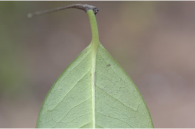
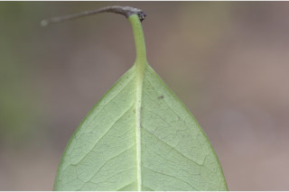

Small trees, up to 8 m tall.
8 ಮೀ ಎತ್ತರಕ್ಕೆ ಬೆಳೆಯುವ ಸಣ್ಣ ಮರಗಳು.
8 മീറ്റര് വരെ ഉയരത്തില് വളരുന്ന, ചെറുമരങ്ങള്
சிறிய மரம் 8 மீ. வரை வளரக்கூடியது.
Branchlets terete, glabrous, purplish brown.
ಕಿರುಕೊಂಬೆಗಳು ದುಂಡಾಗಿದ್ದು ಕೆನ್ನೀಲಿ ಮಿಶ್ರಿತ ಕಂದು ಬಣ್ಣ ಹೊಂದಿದ್ದು, ರೋಮರಹಿತವಾಗಿರುತ್ತವೆ.
ഊത-തവിട്ടുനിറത്തിലുള്ള, അരോമിലമായ, ഉരു ഉപശാഖകള്.
சிறிய நுனிக்கிளைகள் குறுக்குவெட்டுத் தோற்றத்தில் வளையமானது, உரோமங்களற்றது, பழுப்பு நிறமான ப்ரவுன்
Leaves simple, opposite, decussate; petiole 0.7-1.3 cm long; lamina 7.5-15 x 2.5-6.5 cm, elliptic to oblanceolate, apex acute, base acute to cuneate, margin reflexed, coriaceous; midrib raised above; secondary_nerves prominent on the lower surface, 9-11 pairs, running parallel and looped near margin; tertiary_nerves admedially_ramified.
ಎಲೆಗಳು ಸರಳವಾಗಿದ್ದು ಕತ್ತರಿಯಾಕಾರದ ಅಭಿಮುಖ ಮಾದರಿಯಲ್ಲಿ ಜೋಡಿತವಾಗಿದ್ದು ಅಂದಾಜು 0.3 ರಿಂದ 0.7 ಸೆಂ.ಮೀ ಉದ್ದದ ತೊಟ್ಟು ಹೊಂದಿರುತ್ತವೆ;ಎಲೆಪತ್ರಗಳು 7.5 – 15 X 2.5 - 6.5 ಸೆಂ.ಮೀ ಗಾತ್ರವಿದ್ದು ಅಂಡವೃತ್ತದಿಂದ ಬುಗುರಿ-ಭರ್ಜಿಸಮ್ಮಿಶ್ರಾಕಾರ ಹೊಂದಿರುತ್ತವೆ. ಎಲೆ ತುದಿ ಚೂಪಾಗಿದ್ದು, ಎಲೆಯ ಬುಡ ಚೂಪಾಗಿವುದರಿಂದ ಬೆಣೆಯಾಕಾರದವರೆಗಿನ ಆಕಾರದಲ್ಲಿರುತ್ತದೆ, ಎಲೆಯ ಅಂಚು ಹಿಂಚಾಚಿಕೊಂಡಿರುತ್ತದೆ,, ಎಲೆಯ ಮೇಲ್ಮೈ ತೊಗಲವನ್ನೋಲುವ ಮಾದರಿಯದು;ಮಧ್ಯನಾಳ ಎಲೆಯ ಮೇಲ್ಭಾಗದಲ್ಲಿ ಉಬ್ಬಿರುತ್ತದೆ; ಎರಡನೇ ದರ್ಜೆಯ ನಾಳಗಳು ಎಲೆಗಳ ತಳಭಾಗದಲ್ಲಿ ಪ್ರಮುಖವಾಗಿ ಕಾಣುವಂತಿದ್ದು ಸಂಖ್ಯೆಯಲ್ಲಿ 11 ಜೋಡಿಗಳಿರುತ್ತವೆ ಹಾಗೂ ಸಮಾಂತರವಾಗಿದ್ದು ಎಲೆಯಂಚಿನ ಬಳಿ ಕುಣಿಕೆಗೊಂಡಿರುತ್ತವೆ; ಮೂರನೇ ದರ್ಜೆಯ ನಾಳಗಳ ಕವಲುಗಳು ಎಲೆಯ ಅಕ್ಷದ ದಿಕ್ಕಿಗಿರುತ್ತವೆ
സമ്മുഖ ഡെക്കുസേറ്റ് ക്രമത്തിലുള്ള ലഘുപത്രങ്ങള്; ഇലഞെട്ടിന് 0.7 സെ.മീ മുതല് 1.3 സെ.മി വരെ നീളം; പത്രഫലകത്തിന് 7.5 സെ.മി മുതല് 15 സെ.മി വരെ നീളവും 2.5 സെ.മി മുതല് 6.5 സെ. മി വരെ വീതിയും, ദീര്ഘവൃത്തീയം തൊട്ട് അപകുന്താകാരം വരെ, കൂര്ത്ത പത്രാഗ്രവും, കൂര്ത്തതുതൊട്ട് ആപ്പാകൃതിവരെയുള്ള പത്രാധാരം, അകത്തോട്ട് വളഞ്ഞ അരികുകള്, ചര്മ്മില പ്രകൃതം; മുകളില് ഉയര്ന്ന് നില്ക്കുന്ന മുഖ്യസിര; കീഴ്ഭാഗത്ത് ഏറെ വ്യക്തമായിരിക്കുന്ന, 9 മുതല് 11 വരെ ജോഡി ദ്വിതീയ ഞരമ്പുകള്, ഇവ സമാന്തരമായി പോയി അരികുകള്ക്കടുത്ത് വളയം തീര്ക്കുന്നു; അഡ്മിഡിയലി റാമിഫൈഡ് രീതിയിലുള്ള ത്രിതീയ ഞരമ്പുകള്.
இலைகள் தனித்தவை, எதிரடுக்கமானவை, குறுக்குமறுக்கமானவை; இலைக்காம்பு 0.7-1.3 செ.மீ. நீளமானது; இலை அலகு 7.5-15 X 2.5-6.5 செ.மீ., நீள்வட்டம் முதல் தலைகீழ் ஈட்டி வடிவம், அலகின் நுனி கூரியது, அலகின் தளம் கூரியது முதல் ஆப்பு வடிவம், அலகின் விளிம்பு பின்னோக்கி வளைந்தது, கோரியேசியஸ்; மையநரம்பு மேற்பரப்பில் அலகின் பரப்பைவிட உயர்ந்தது; இரண்டாம் நிலை நரம்புகள் அடிப்பரப்பில் தெளிவானது, 9-11 ஜோடிகள், இணையானது மற்றும் விளிம்பை ஒட்டி வளைவானது; மூன்றாம் நிலை நரம்புகள் அட்மீடியல்லி ராமிபைடு.
Flowers in sessile clusters, axillary.
ಹೂಗಳು ಅಕ್ಷಾಕಂಕುಳಿನಲ್ಲಿದ್ದು ತೊಟ್ಟುರಹಿತ ಗುಚ್ಛಗಳಲ್ಲಿರುತ್ತವೆ.
പൂക്കള് കക്ഷങ്ങളില്, അവൃന്ത കൂട്ടങ്ങളായുാകുന്നു.
மலர்கள் காம்பில்லாமல் கொத்தாக இலைக்கோணங்களில் காணப்படும்.
Capsule, oblong, 1.5-2 cm long; 1-seeded
ಸಂಪುಟ ಫಲಗಳು ಚತುರಸ್ರಾಕಾರದಲ್ಲಿದ್ದು, 1.5 ರಿಂದ 2 ಸೆಂ.ಮೀ ಉದ್ದವಿದ್ದು ಒಂದು ಬೀಜವನ್ನೊಳ ಗೊಂಡಿರುತ್ತದೆ.
കായ 1.5 സെ.മീ മുതല് 2 സെ.മി വരെ നീളമുള്ള, ആയതാകാരത്തിലുള്ള കാപ്സ്യൂള് ആണ്; ഒറ്റവിത്തുമാത്രം.
வெடிகனி (கேப்சூல்), நீள்சதுர வடிவானது, 1.5-2 செ.மீ. நீளமானது, ஒரு விதை கொண்டது.


 
